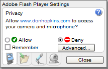

This chapter discusses streaming audio and video in .flv and .mp3 formats that are rendered in the specialized
OpenLaszlo video APIs give you access to the full functionality of media players such as the Flash Media Server and the Red5 media player. When you OpenLaszlo program is connected to a media server over a Real Time Media Protocol connection, you can not only receive and play audio and video (in mp3 and flv formats), you can also record your own audio and video locally and send it to the server, where it can be stored or shared in real time with other client programs.
In contrast to RTMP, files that are streamed over an HTTP connection allow more limited limited functionality.
This chapter explains the concepts of controlling streaming media over an HTTP connection and and bi-directional communication with a media server over an RTMP connection.
There are two main ways that OpenLaszlo applications can interact with video media: as a basically passive recipient of streamed video served over HTTP, or, when a media server is present, the OpenLaszlo application can fully interact with the server, capturing video and audio data with local cameras and microphones and sending it back to the media server over RTMP.
Media servers do not only stream media content to the Flash plugin, they can also send instructions to be executed on the client and other kinds of data. Servers can receive video, audio and data from an OpenLaszlo application and either save it or rebroadcast it. These APIs allow you to manipulate the source video content on the client—for example, to rotate it, change its transparency, seek forward and back, and so forth.
This functionality makes possible entirely new types of web applications. For example:
OpenLaszlo APIs implement an abstraction layer so that you can use the same classes to manipulate video data regardless of its source. For example, you use a
Depending on whether your application is a simple receptor of streams or a sender and receiver, the architecture of the application may be simple or complex. In the simplest case, the LZX application merely catches and displays streamed files, and your programming options are limited. In the more complex case, for example, a multi-point video chat, your application may be considered to have a central server component and any number of clients, which communicate with each other through the server. In such applications you need to handle such things as receiving and displaying streamed data, recording and broadcasting from local microphones and cameras, seeking forward and back in the stream, and so forth. We'll examine some of these cases in examples below.
LZX videoviews can stream content in FLV or Mp3 format. According to the Wikipedia,
FLV (Flash Video) is a proprietary file format used to deliver video over the Internet using Adobe Flash Player (also called Macromedia Flash Player) version 6, 7, 8, or 9. FLV content may also be embedded within SWF files. Notable users of the FLV format include Google Video, Reuters.com, YouTube and MySpace. Flash Video is viewable on most operating systems, via the widely available Macromedia Flash Player and web browser plug-in, or one of several third-party programs such as Media Player Classic (with the ffdshow codec installed), MPlayer, or VLC media player.
The ubiquitous Mp3 format is described:
MPEG-1 Audio Layer 3, more commonly referred to as MP3, is a popular digital audio encoding and lossy compression format, designed to greatly reduce the amount of data required to represent audio, yet still sound like a faithful reproduction of the original uncompressed audio to most listeners. It was invented by a team of German engineers who worked in the framework of the EUREKA 147 DAB digital radio research program, and it became an ISO/IEC standard in 1991.
Video content can be communicated from the server using either of two protocols:
Depending on where the media is being served from and what protocol connects the OpenLaszlo client to the sever, different capabilities are available in the client application.
HTTP, the HyperText Transfer Protocol, is useful for downloading files to a client. However it's not interactive and has no special provisions for handling data in video format. When you load an URL that identifies a .flv or mp3 file, that file is downloaded. You have some control over when to start playing the download, but that's about it. From the point of view of the content provider, the most obvious value of using HTTP is that it requires no special media server. Also, HTTP is useful when bidirectional communication is not needed because videos downloaded on this protocol start fast.
When you download a file over HTTP, the entire file is loaded into memory. Once in memory you can quickly seek. But because the files must all fit into memory, there is a limit on the size of files that you can handle in this way.
RTMP, the Real Time Messaging Protocol, was developed by Adobe (formerly Macromedia), in order to get around the limitations of HTTP when dealing with bi-directional ("full duplex") video data in real time. RTMP provides APIs for complex interactions, and because the connection allows you to download portions of the file as needed, you can handle larger files than can HTTP, which download the entire file. With RTMP there is less memory usage, as only one frame is loaded into memory at a time. RTMP has been optimized for video, and has better compression rates. In order to use the RTMP protocol, you must establish a connection to an application on a server. You do this using the
For more information on the RTMP protocol, see Adobe and OS Flash sites.
Each of these protocols has its uses. The RTMP protocol, coupled with a media server, provides a much more rich environment for creating interactive media applications. On the other hand HTTP requires no special media server software, and for many simple streaming applications it provides faster startup.
OpenLaszlo capabilities on the client are provided through a group of base classes and through two components that are built on top of these base classes.
The
The
Notice that unlike
When you create a
The
OpenLaszlo provides two upper level components for managing connections and video objects.
The
This element causes a small indicator "light" to show the status of the connection:
The example below shows this component.
The
An
If there is only one rtmpconnection, the video object automatically hooks up to it:
When an application has more than one rtmp connection active, you chose among them by specifying the URL passed to the
OpenLaslzo implements the
When your program instantiates a camera or microphone object, the Flash Player causes a dialogue to be appear on the screen. If the person using the application indicates that permission has been granted, the true>
Note that it is not possible to allow permission on one device and not another. It's an all-or-nothing proposition. You grant access to all cameras and microphones, or to none.
Here's an illustration of a representative security dialogue the first time the camera is requested:

You can change the permissions of a running application by using the right-click context menu on the video. Note that the menu may show the name of device drivers, not the actual devices. A typical right-click menu is shown below.

Once you have attached a microphone and/or camera to a videoview and received permission from the user to turn them on, the application turns them on by setting true.
You can have more than one camera associated with a videoview. The following example shows how to use the
To show a video from http server and play it automatically:
The Real Time Media Protocol, RTMP, is designed to handle efficiently high speed communication of audio and video information between a client application and a media server.
Here are some general guidelines for setting up video cameras and servers for OpenLaszlo applications. You should of course consult the documentation for the individual servers too.
Install the Flash Media Server in:
C:\Program Files\Macromedia\Flash Media Server 2\
Create the test application directly and subdirectories:
C:\Program Files\Macromedia\Flash Media Server 2\applications\test C:\Program Files\Macromedia\Flash Media Server 2\applications\test\streams C:\Program Files\Macromedia\Flash Media Server 2\applications\test\streams\instance1
Copy the flash video test files into the test\streams\instance1 directory, from:
$LZ_HOME/test/video/videos/*.flv
If the media server fails to start on Windows, check to make sure that Emacs or another text editor did not change the ownership and permission of the configuration files. You may have to, for example, change permission on some of the Flash Media Server xml configuration files because the Flash server (which ran as another user) could not read them and would not start.
If the media server fails to work on Linux, make sure that you have the shared libraries from Firefox installed in /usr/lib. If you're missing the libraries, the server will run and appear to be working, and the admin interface actually will work, but none of the streaming video works. When you run the flash server startup command ("./server start"), it will complain about missing libraries. If this happens, download Firefox and copy all its shared libraries to /usr/lib.
http://livedocs.macromedia.com/fms/2/docs/wwhelp/wwhimpl/common/html/wwhelp.htm?context=LiveDocs_Parts&file=00000009.html
OpenLaszlo applications can communicate with the Red5 media server, an open source Flash media server that uses rtmp. For more on Red5, see their website.
There is a QuickCam "Logitech Process Monitor" server (LvPrcSrv.exe) that interferes with Cygwin, the one that substitutes computer generated characters for the video stream, who track your motion and facial expressions. It causes cygwin to fail forking new processes. This manifests itself by build processes mysteriously failing, and Emacs having problem forking sub-processes in shell windows. You have to disable the server to make Cygwin work again.
http://blog.gmane.org/gmane.os.cygwin.talk http://www.cygwin.com/ml/cygwin/2006-06/msg00641.html
You control playing and stopping of the videostream by using the
In the example below, two videoviews are communicating with each other through a media server located at localhost/test over the RTMP protocol. Each view specifies an URL to the other.
Audio and video files that are attached as resources to regular
If you attach a resource to a view it's compiled into the swf, making the initial swf size larger, but then when the swf is fully loaded it is available to play instantaneously when needed.
If you stream the mp3 it will usually be easier on the memory, but timing will be less reliable, as the player has to buffer the downloaded file. For example, consider how you might build a video editor. If you had two video clips on a server and you wanted to use two video views to overlay on top of one another so you could create a transition from one to the other (creating a virtual video editor), you could monitor the first video so you know when to start the second. However, the appearance of this transition would be unpredictable. If you were tell the second video to play while fading from one video view to another, the amount of time before the second video were to play would depend on the buffer amount and bandwidth, not on time, so you would not be able to pre-load it and pause it in order to control the precise moment for the second video to start playing.
So you'd use the first approach, using files transcoded to .swf and attached as resources to